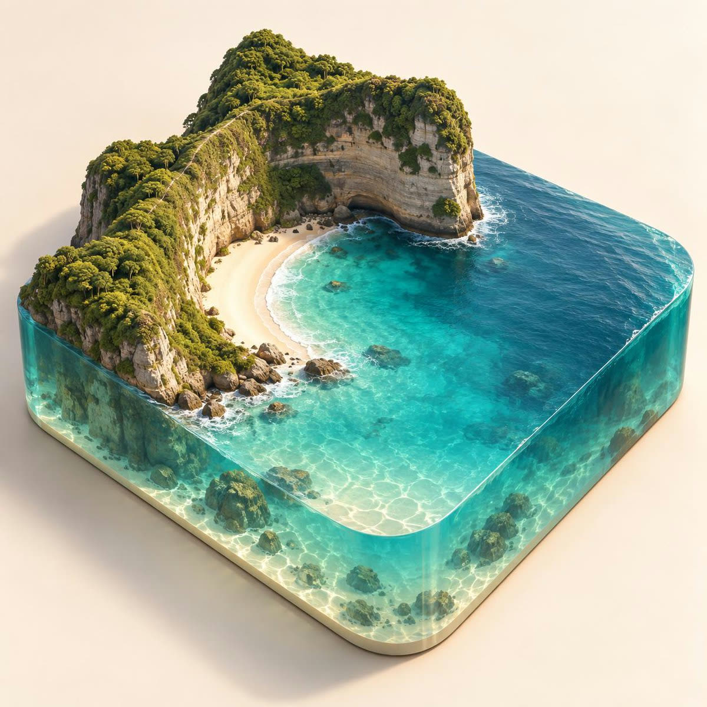
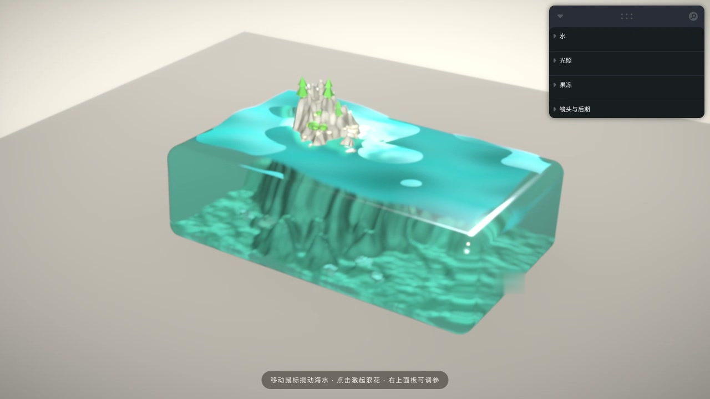
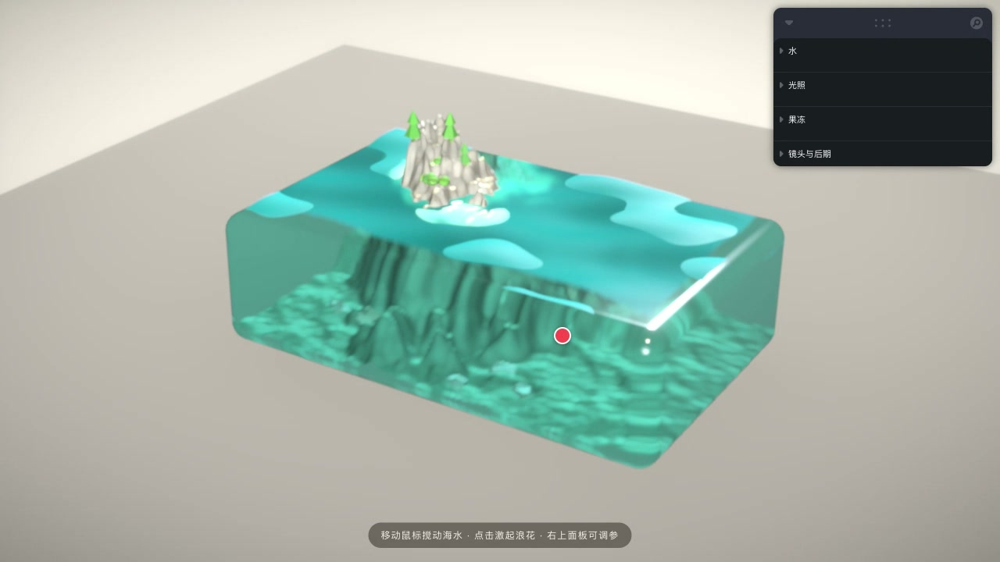

给 AI 一句"树脂方块里装着悬崖、沙滩和清澈的青绿海水"，十秒钟它给你一张足以乱真的产品摄影。很美——但它是死的。这篇文章记录我怎么用 Vite + React Three Fiber 把这张图变成真的：会晃的果冻块体、随鼠标起浪的水面、程序化的悬崖沙滩，桌面满帧 120fps，全部代码生成、零模型文件。
起因是一张 Codex 生成的参考图。我想要一个"树脂块微缩岛屿"的桌面交互场景，就把需求描述丢给了它：

这张图几乎满足了我对"树脂岛屿"的全部想象：模拟波浪的水面纹路、由浅到深的青绿渐变、透过树脂可见的海床与礁石、崖顶的绿植层次。我盯着它看了十秒，然后意识到一个问题：它美得越完整，就越让人想伸手搅一下。而它不能被搅。
于是有了这个目标：同样的构图和气质，但必须是实时的、可交互的、纯代码生成的。鼠标划过水面要起涟漪，整个块体要像果冻一样晃，海水要有透亮的水色和岸边的泡沫。成品开源在 bayshier/resin-island，点开就能玩：在线 Demo。

这种场景最容易犯的错是一上来就抠材质。我的做法是把场景拆成六个独立职责的组件：树脂块、地形、水面、岩石植被、果冻组、后期，再加一个 leva 调参面板把所有关键参数暴露出来。先让整条管线跑起来——哪怕水是死平的、岛是个锥——然后在真实渲染里一张一张截图对着调。
技术栈 Vite + React 19 + TypeScript
三维 three r180 + @react-three/fiber v9 + drei + postprocessing
调参 leva（水色/浪高/潮位/太阳角度/果冻软硬/景深……18 个旋钮）
约束 零模型文件，全部程序化生成事后看，这个顺序救了我两次：水面着色器曾经因为一个没声明的 uniform 静默编译失败，网格直接消失——如果一开始就堆满材质，这种问题会埋在几百行 GLSL 里;而 leva 面板让我调果冻的软硬时不用改一行代码，拖滑块就能感受弹簧手感的差别。
水面是整个项目的心脏。我用了一张半浮点渲染目标做 GPU 高度场模拟：纹理的 R 通道存高度、G 通道存速度，每帧在着色器里做一次波动方程积分（四邻域拉普拉斯 + 阻尼），两张纹理 ping-pong 交换。鼠标涟漪就是往这张纹理上"打"一个高斯斑，波浪会自己扩散、在块壁上反射、慢慢衰减——物理感是白送的。
水面网格的顶点着色器直接采样这张模拟纹理做位移，再叠三层方向不同的环境涌浪，法线用高度的解析梯度现算。着色则是假折射：把海床的反照率和高度预烘焙进一张数据纹理，水面片元按水深混色——浅处透出沙色，深处渐入青绿，岸边自动长出碎泡沫。真折射当然更物理，但要多一次全场景渲染，而这个场景里假折射的观感几乎无损。
这里踩了全项目最隐蔽的一个坑：往模拟纹理里画高斯斑时没关 renderer.autoClear，结果每次画涟漪都会把整个模拟状态先清空——水面上永远只剩最近一个孤立的光斑，整体还被顶点位移拧成了麻花。排查它花的时间比写模拟器本身还长。
地形是纯 CPU 程序化：种子化 simplex 噪声叠 fbm 和 ridged 分形，海床打底，一角隆起岛屿。关键是构图决定——第一版我把水面放在块体中部，结果整座岛闷在树脂顶面的折射里，完全看不出悬崖。参照 AI 那张图重新想：真实树脂块的水是贴着瓶口的。于是把水面抬到几乎齐平块顶、让悬崖直接穿出块体——水面网格与地形的交线处自然形成水线，泡沫环沿着它生长，悬崖在水上、沙滩坡在水下透过树脂可见，一眼就对了。
分层着色也全在 CPU 侧完成：按高度和坡度把顶点色分成深水沙、湿沙、干沙、草甸、层理岩崖五带，水下部分预先烘进水体吸收的青绿色调；焦散用经典的多次折射干涉纹样注入地形材质，只在水面以下生效、随深度衰减。植被是低多边形松树/灌木/草茎的实例化散布，位置由高度和坡度拒绝采样决定——崖顶和陡壁上自然长不出树。
"整个块体像果冻一样跟着鼠标晃"，实现上就是每个 帧 做一次欠阻尼弹簧积分：弹簧追指针的目标位置，阻尼系数决定回弹时晃几下才停。花招在支点——把旋转载荷加在以块底为支点的倾转上，顶部的位移天然是底部的好几倍，"顶部晃得比底部多"不用任何顶点级软体模拟就成立。再加一层小心思：水面着色器里叠了一个与果冻速度反相的倾斜场，模拟液体滞后于容器的晃荡。
把两张图放一起看，差距要诚实承认：
所以我的结论是：AI 生成的是终点画面，实时渲染的是过程体验。前者适合定调——这次它定调定得极好，构图、水色、悬崖与沙滩的比例我都直接参照了它；后者适合上手——你没法摸一张图，但可以摸一个 WebGL 场景。

透射材质（每帧一次额外场景渲染）、景深、水面模拟，个个都是性能大户。做法是三档质量配置——DPR、模拟分辨率、透射采样数、景深开关逐级递减——再配一个帧率守卫：每 2.5 秒统计一次平均帧率，低于 33fps 自动降一档。实测 M 系列 Mac 上桌面满帧 120fps（ProMotion 全速），手机初始即中档起步。顺带一提，模拟和渲染全部跑在 GPU 上，CPU 每帧只做弹簧积分和 uniform 更新。
npm install && npm run dev 即起）如果你也想把一张 AI 的"美图"变成"活物"，我的建议就一句：先把参考图里的构图语言翻译成场景结构（水面在哪、什么穿出什么、视线看穿几层材质），再动手写代码——图是结果，场景是因果。剩下的，leva 面板会陪你把每一个参数磨到位。